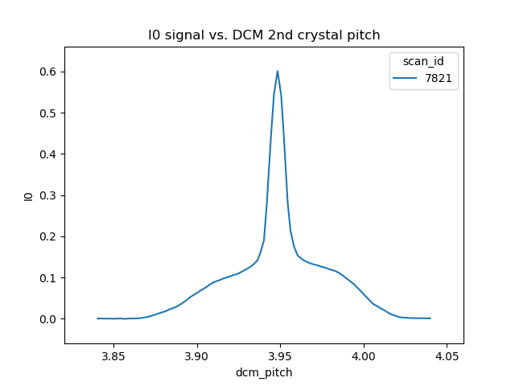

7. Managing the beamline¶
In this section, some recipes are provided for managing the beamline and meeting the needs and expectations of different experiments.
As a reminder, here is the table of operating modes.
| Mode | focused | energy range |
|---|---|---|
| A | ✓ | above 8 keV |
| B | ✓ | below 6 keV |
| C | ✓ | 6 keV – 8 keV |
| D | ✗ | above 8 keV |
| E | ✗ | 6 keV – 8 keV |
| F | ✗ | below 6 keV |
| XRD | ✓ | above 8 keV |
7.1. Change energy¶
Changing energy is simple. Usually, it is as simple as doing
RE(change_edge('Fe'))
replacing the two-letter element symbol with the element you actually want to measure. This command will move the monochromator, put the photon delivery system in the correct mode, run a rocking curve scan, optimize the slit height, and move the reference foil holder to the correct position.
If you want to reproduce this by hand, here is the command sequence:
First move the DCM to the new energy position. It is usually a good idea to move a bit above the target edge energy. Here's an example for moving 50 eV above the iron K edge energy:
RE(mv(dcm.energy, 7112+50))
Put the beamline in the correct photon delivery system mode. (See the table just above.) Continuing with the example of the iron K edge, for unfocused beam:
RE(change_mode('E'))
If the new edge energy is in the same energy range according to the table above, you can skip this step. For example, Mn and Fe are both in mode E (or mode C). The
change_mode()command does not need to be run to move between those edges.Measure a rocking curve scan (Sec 4.2) to verify that the second crystal of the rocking curve is parallel to the first crystal. This is more important for large energy changes. You may find that you can skip this step if you are changing between nearby edges.
RE(rocking_curve())
At the end of the scan, the mono pitch will be moved to the top of the rocking curve.
Next, verify that the height of the hutch slits (Sec 4.2) is optimized for the beam height. In principle, this should be correct after changing photon delivery system mode. But it doesn't hurt to verify.
RE(slit_height())
At the end of the scan, you will need to pluck the correct position from the plot.
Finally, if you are using a reference foil, you should move the reference foil holder to the slot containing the correct foil. The command is something like:
RE(mv(xafs_ref, 45))
The positions on the reference foil holder are 45 mm apart. The top-most slot is at an
xafs_refposition of -90, the bottom-most at +90.
7.2. Change mode¶
Suppose that you want to change from high-energy, unfocused operations to low energy, focused. That is, you are changing from mode D to mode B, for example moving from a large sample at the yttrium K edge to a small sample at the vanadium K edge.
RE(change_mode('B'))
RE(mv(dcm.energy, 5465+50))
RE(rocking_curve())
RE(slit_height())
- If the beam has recently been focused at the XRD station, you will also need to adjust the bender on M2 to optimize vertical focus at the XAS station (or vice versa). This is best done with the small CCD camera sitting in the XAS sample stage.
- Again, iterating the optimization of the rocking curve and slit height might be necessary.
7.3. Change crystals¶
Suppose you wanted to change from the Pt L3 edge (11564 eV) on the Si(111) crystal to the same energy on the Si(311) crystal.
RE(change_xtal('311'))
This will move the lateral motor of the DCM and optimize the roll and pitch of the second crystal. It will leave the DCM at 22143.4 eV, so move back to the correct energy and rerun the rocking curve scan.
RE(mv(dcm.energy, 11564))
RE(rocking_curve())
Note that some of these motions can be a bit surprising in the sense that the monochromator will end up outside the normal operating range of the beamline.
For example, starting much higher in energy on the Si(111)
monochromator will leave the beamline above the energy cut-off imposed
by the collimating mirror. In that case, the signal will be quite
feeble and the rocking curve scan that is part of the
change_xtal() command might be hard to interpret.
Another example: changing from a rather low energy on the Si(311) crystal might leave the mono well below 5000 eV. In that case the fundemnatal will be significantly attenuated by the Be windows and by the air, while the harmonics may not be well removed by the flat mirror. Again, the rocking curve scan will be hard to interpret in that case.
In both examples, move the monochromator back to the desired energy before exploring the rocking curve.
7.4. Change XAS ↔ XRD¶
Begin this transition by leaving the I0 chamber in place to monitor the incidence flux. Do:
RE(change_mode('XRD'))
RE(mv(dcm.energy, 8000))
RE(rocking_curve())
RE(slit_height())
This change of mode should have the beam in good focus at the position
of the goniometer. 8000 eV is the nominal operating energy for the
goniometer. If a higher energy is required, substitute the correct
energy for 8000 in the second line.
Todo
Determine look-up table for lower energy operations using both M2 and M3.
Once the photon delivery system is set, remove the ion chambers and insert the XRD flight path into its place.
7.5. XAFS with Si(333)¶
Using the Si(111) monochromator, it is possible to use the third harmonic – the Si(333) reflection – to measure XAS with slightly higher energy resolution. In this section, we explain how to set up the beamline to measure the Ge K edge at 11103 eV using the Si(333).
You cannot use the change_edge() command to do this. Use of the
Si(111) (or Si(311)) is hard-wired into that plan. You have to set up
the beamline by hand.
First, put the photon delivery system in mode D (or mode A if using the focusing mirror):
RE(change_mode('D'))
Next, move the monochromator to a few 10s of eV above the absorption edge, as measured with the third harmonic. The Ge K edge is at 11103 eV, so we need to move the monochromator to 11103/3 = 3701 eV.
RE(mv(dcm.energy, (11103+27)/3))
or simply
RE(mv(dcm.energy, 3701+9))
This will put the third harmonic energy 27 eV above the Ge K edge.
Now, run a rocking curve scan:
RE(rocking_curve())
This will produce a plot that looks something like this:
{kind=link}

Fig. 7.1 A rocking curve scan with the photon delivery system in mode D and the mono at 3716 eV.
The broad base of this curve is the Si(111) rocking curve with photons at 3710 eV. The sharp spike in the middle is the Si(333) rocking curve with photons at 11130 eV.
Optimize the slit_height:
RE(slit_height())
You are ready to measure XAS with the Si(333) reflection!
Here's an example scan.ini file for XANES of elemental Ge:
[scan]
folder = /home/xf06bm/Data/Staff/Bruce Ravel/2019-03-28
experimenters = Bruce Ravel
usbstick = True
filename = Ge
sample = elemental Ge, crystalline
prep = standard sample
comment = measured with Si(333) reflection, 25um Al foil in beam path before I0
ththth = True
e0 = 11103
element = Ge
edge = K
nscans = 1
start = next
## mode is one of transmission, fluorescence, both, or reference
mode = transmission
## Ge Si(333)
bounds = -45 -18 -9 36 150
steps = 9 0.9 0.3 0.9
times = 0.5 0.5 0.5 0.5
Several things to note:
- Note that the actual value for E0 is specified.
- Actual energy bounds and steps are specified, the xafs scan plan will convert them to appropriately sized steps for the Si(111).
- By setting the 333 flag to True, the correct thing will happen, including writing the correct energy axis to the output data file.
- The on-screen plot will show the Si(111) energy, however.
- Also, you still need to set up the photon delivery system up by hand.
This manual is copyright © 2018 Bruce Ravel
 This document is licensed under The Creative Commons Attribution-ShareAlike License.
This document is licensed under The Creative Commons Attribution-ShareAlike License.
If this document is useful to you, please consider supporting The Creative Commons.